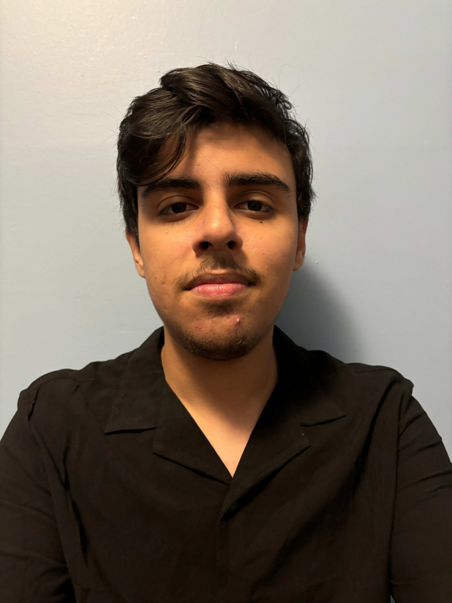

Rock Paper Scissors Detection
A computer vision game that detects which move you play with your hand and competes against a bot in real time.
Electrical & Computer Engineering · Machine Learning
I'm a freshman at NYU Tandon who builds things with data, models, and code. I like turning raw machine learning output into software people can actually use.

I'm studying Electrical & Computer Engineering at NYU Tandon School of Engineering. My main interest is machine learning, and I also build web apps and computer vision programs to put those ideas to work.
This spring I interned at 24/7 Teach on Naomi-AI, an AI learning platform, where I built generation pipelines and cleaned up model output for the app. Before that, I wrote custom Python tools for small businesses at the Queens College Tech Incubator.
A computer vision game that detects which move you play with your hand and competes against a bot in real time.
Controls system volume by tracking hand gestures through a webcam.
A machine learning web app that predicts a penguin's species from its measurements.
A machine learning web app that predicts an NBA player's position from their stats.
A web scraper that collects Japanese car listings and presents them in a Flask app.
I'm open to internships and projects in machine learning and engineering. Email me and I'll reply.